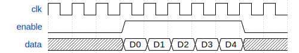
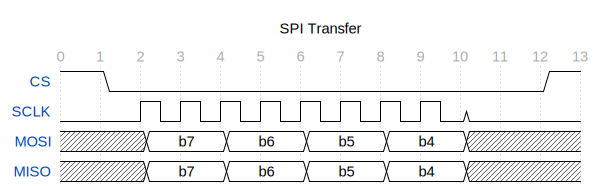
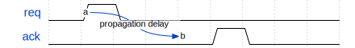

WaveDrom is a JavaScript library that renders digital timing diagrams from a simple JSON-based format called WaveJSON. It's widely used in hardware documentation — you describe signal transitions in a compact string notation, and WaveDrom draws the waveform. This post covers two tools I've built around it: a Pelican plugin that renders diagrams at build time, and a Claude Code skill that generates WaveJSON from plain English.
The Pelican plugin
The plugin is at github.com/morganp/pelican-wavedrom, cloned to ~/Code/pelican-wavedrom — a sibling directory to the blog repo. It intercepts fenced ```wavedrom ``` code blocks before Pelican's standard Markdown processing, renders each one to an SVG using wavedrom-cli, caches the result by content hash in content/images/wavedrom/, and replaces the block with a standard image reference. Pelican then copies the SVG to output/images/wavedrom/ as a static asset.
SVGs are cached across builds — only diagrams whose source has changed are re-rendered.
Installation
The plugin requires wavedrom-cli globally via npm:
npm install -g wavedrom-cli
Then clone the plugin alongside your blog repo and install it into the Pelican virtualenv in editable mode:
git clone https://github.com/morganp/pelican-wavedrom ../pelican-wavedrom
source venv/bin/activate
pip install -e ../pelican-wavedrom --config-settings editable_mode=compat
The editable_mode=compat flag is required. Without it, modern setuptools editable installs use a path-hook mechanism that prevents Pelican's namespace plugin auto-discovery from finding the plugin.
Pelican 4.5+ auto-discovers namespace plugins — no changes to pelicanconf.py are needed.
Optional config
If wavedrom-cli is not on your PATH during the build (e.g. in a CI environment), set its full path in pelicanconf.py:
WAVEDROM_CLI = '/opt/homebrew/bin/wavedrom-cli'
Using it in a post
Write a fenced code block with the language set to wavedrom:
```wavedrom
{ "signal": [
{ "name": "CLK", "wave": "p.....|..." },
{ "name": "Data", "wave": "x.345x|=.x", "data": ["head", "body", "tail", "data"] },
{ "name": "Request", "wave": "0.1..0|1.0" }
]}
```
At build time (make html or make github) this becomes an SVG embedded in the page:

If wavedrom-cli is not found or rendering fails, the block falls back to a fenced json block — the post still builds, you just see the raw JSON instead of a diagram.
The Claude Code skill
The skill lives at ~/.claude/skills/wavedrom/SKILL.md. Claude Code auto-discovers skills from ~/.claude/skills/ and loads them on demand.
The skill triggers automatically when you describe anything related to timing diagrams, waveforms, or digital protocols — SPI, I2C, UART, AXI handshakes, clock enables, request/acknowledge patterns. You describe the signals in plain English; Claude generates the WaveJSON.
The skill includes:
- The full WaveJSON wave-character reference (
p,n,0,1,x,z,.,=,2–9,|) - Signal properties (
phase,period,node) - Top-level properties (
edge,config,head,foot) - Group and spacer syntax
- Edge annotation syntax for timing arrows between signals
- Common patterns: SPI transactions, request/acknowledge handshakes, clock-with-enable, grouped signals
Example workflow
Describe the protocol:
"Draw an I2C start condition followed by a 7-bit address byte with ACK"
Claude generates the WaveJSON and explains the timing. Because the skill outputs a wavedrom fenced block (not just JSON), you can paste it directly into a blog post and the Pelican plugin renders it automatically.
WaveJSON quick reference
The wave string for each signal is a sequence of characters:
| Char | Meaning |
|---|---|
p / n |
Positive / negative clock (with tick mark) |
0 / 1 |
Logic low / high |
x |
Unknown / undefined |
z |
High impedance |
. |
Continue previous state |
= |
Multi-bit data (label from data array) |
2–9 |
Coloured data states |
\| |
Gap / break in time axis |
A minimal diagram:

An SPI transaction with chip select:

A request/acknowledge handshake with an edge annotation showing propagation delay:

Project structure
~/Code/
├── morganp.github.io/ # blog source (main branch)
│ └── content/images/wavedrom/ # SVG cache (persists across make clean)
└── pelican-wavedrom/ # github.com/morganp/pelican-wavedrom
└── pelican/plugins/wavedrom_generator/
├── __init__.py # plugin entry point, signal registration
└── preprocessor.py # Markdown extension + preprocessor
~/.claude/skills/
└── wavedrom/
└── SKILL.md # Claude Code skill definition
The combination is useful for hardware documentation: describe a protocol in English, get WaveJSON from Claude, drop the block into a post, and the plugin renders it at build time. No manual JSON editing, no copy-pasting between browser tabs.
The same skill format is used by the Verilog lint skill — describe a module, get generated RTL, and the lint loop validates it automatically.